Esquemáticos Originales del Curso — Módulos MAR y RAM (SAP-1)
Diagramas eléctricos de referencia suministrados para el diseño de la computadora SAP-1 (mar.sch, ram.sch y plano jerárquico general 8bit-computer.sch). Haz clic o toca cualquier esquema para abrir el visor con zoom de alta precisión y revisar cada pin, valor y conexión.
Registro de Dirección de Memoria de 4 bits: captura BUS_0..BUS_3 mediante ~MI, CLK y CLR en U34 (74LS173), conmuta con el banco manual SW5 en U33 (74LS157) gobernado por SW6 (PROG/RUN con LEDs D48/D49 y R63/R64 = 1 kΩ), visualiza A3..A0 en D44–D47 (220 Ω) e incluye el capacitor único de entrada C18 = 0.1 µF (100 nF) entre VCC y GND.
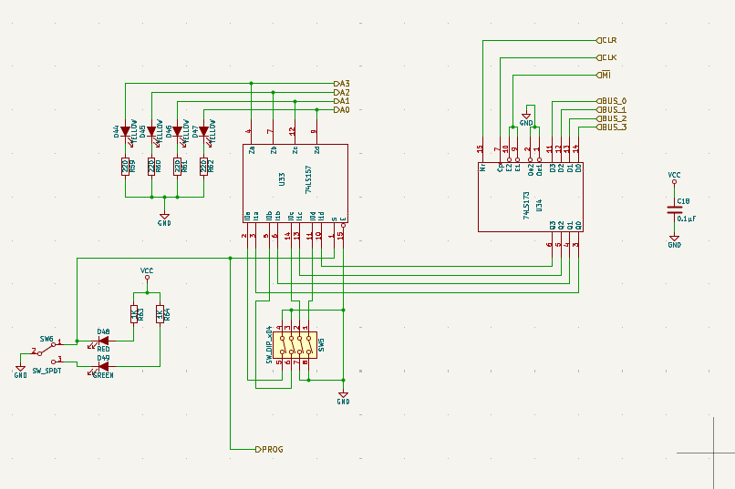
🔍 Ampliar esquema
Módulo MAR — mar.schDiagrama original del profesor · Clic para zoom
Memoria RAM estática de 16 palabras × 8 bits: dos 74LS189 (U24, U25) con salidas invertidas restauradas por U28/U29 (74LS04), multiplexores de datos U26/U27 (BUS_7..0 vs. SW3 directo) y de escritura U32 (SW4 directo vs. U31A), red diferenciadora RC funcional en reloj (C7 = 0.01 µF / 10 nF + R58 = 1 kΩ), transceptor tri-estado U30 (74LS245) hacia el Bus W y par de capacitores de entrada en paralelo C16 y C17 = 0.1 µF (100 nF).
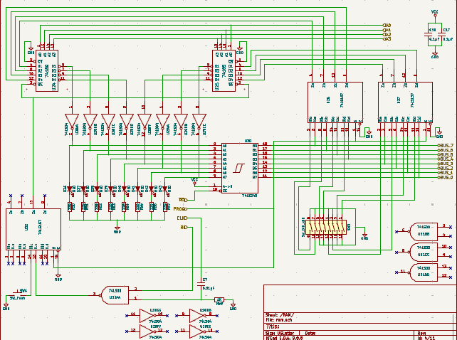
🔍 Ampliar esquema
Módulo RAM — ram.schDiagrama original del profesor · Clic para zoom
Esquemático General SAP-1 (8bit-computer.sch)
Arquitectura Completa · Bus W (8 bits)
Plano jerárquico maestro de la computadora SAP-1 mostrando la interconexión de los bloques MAR y RAM con el Bus W (BUS_0..BUS_7), la red pull-down (R8–R15), los LEDs del bus, la Unidad de Control (~MI, RI, ~RO), el reloj (CLK) y la alimentación principal de +5 V.
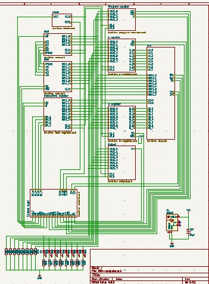
🔍 Ampliar esquema
SAP-1 General — 8bit-computer.schInterconexión MAR ↔ RAM ↔ Bus W · Clic para zoom
Hojas de Datos (Datasheets) e Integrados — Módulos MAR y RAM
Recopilación técnica extraída fielmente del informe SAP-1 (UC · FaCyT): pinouts, diagramas lógicos, tablas de verdad y condiciones recomendadas de operación. Haz clic o toca cualquier imagen para abrir el visor con zoom y leer cada número de pin con claridad en PC o teléfono.
Multiplexor cuádruple 2 a 1 (selector de datos): En el MAR (U33, montado con muesca hacia abajo 180°) selecciona la fuente de dirección A3..A0 entre el banco manual SW5 (entradas I0 cuando S = 0, modo PROG) y el registro U34 (entradas I1 cuando S = 1, modo RUN), con habilitación ~E (pin 15) fija en GND. También se utiliza en la RAM para multiplexar los 8 bits de datos (U26, U27) y la línea de escritura ~WE (U32).
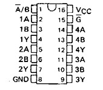
🔍 Ampliar
SN74LS157NPinout DIP-16
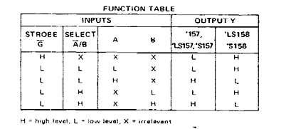
🔍 Ampliar
SN74LS157NTabla de verdad
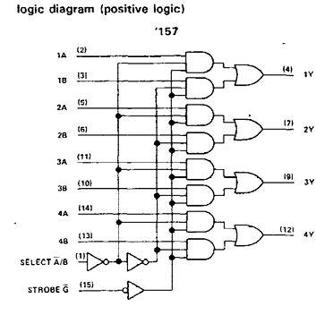
🔍 Ampliar
SN74LS157NDiagrama lógico
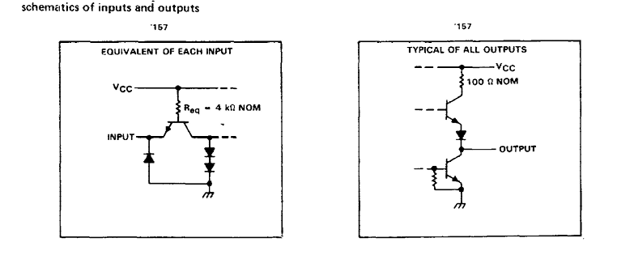
🔍 Ampliar
SN74LS157NEsquema E/S internas
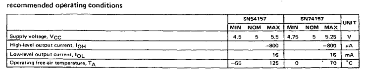
🔍 Ampliar
SN74LS157NCondiciones de operación
SN74LS173AN
U34 (MAR)DIP-16 · TTL LSMódulo MAR
Registro síncrono de 4 bits tipo D con salidas tri-estado: Captura los 4 bits inferiores del Bus W (BUS_3..BUS_0 en pines 14..11) en el flanco ascendente de CLK (pin 7) cuando ~MI (pines 9–10 puenteados) está en bajo. Posee borrado asíncrono activo en ALTO en CLR (pin 15) y sus controles de salida M/N (pines 1–2) permanecen aterrizados a GND. En el prototipo físico está montado con muesca hacia abajo (180°).
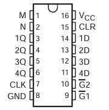
🔍 Ampliar
SN74LS173ANPinout DIP-16
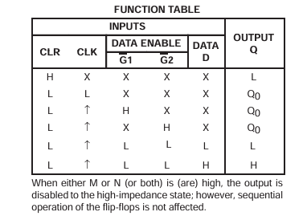
🔍 Ampliar
SN74LS173ANTabla de verdad
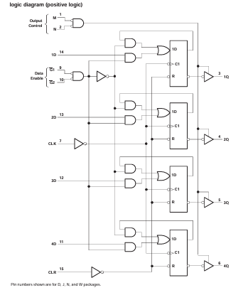
🔍 Ampliar
SN74LS173ANDiagrama lógico
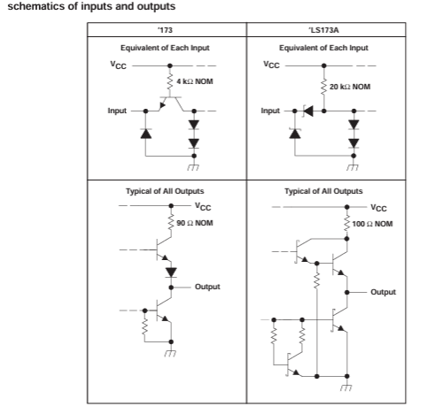
🔍 Ampliar
SN74LS173ANEsquema E/S internas
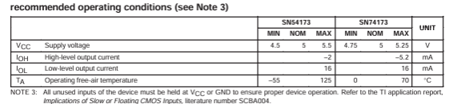
🔍 Ampliar
SN74LS173ANCondiciones de operación
2. Integrados del Módulo RAM — Diseño Base (9 × 15 cm)
Memoria SRAM estática de 64 bits (16 palabras × 4 bits) con salidas tri-estado invertidas: Dos unidades en paralelo forman los 16 bytes de la SAP-1. Su pinout intercala entradas y salidas (4=D1, 5=~O1, 6=D2, 7=~O2, 9=~O3, 10=D3, 11=~O4, 12=D4), con direcciones en 1=A0, 15=A1, 14=A2, 13=A3, ~CS (pin 2) a GND y ~WE (pin 3) desde U32.12. Durante escritura (~WE=0) las salidas pasan a alta impedancia (Hi-Z); durante lectura (~WE=1) entregan el complemento del dato hacia U28/U29.
Hex Inversores (6 compuertas NOT independientes): Se utilizan 4 inversores de U28 y 4 de U29 para restaurar la polaridad positiva de las salidas negadas ~DO7..~DO0 de las memorias 74LS189 (o 7489/74LS89), excitando simultáneamente los 8 LEDs rojos de datos (D36–D43) y las entradas A0..A7 del transceptor U30. Las 4 entradas no usadas (pines 1 y 3 de ambos chips) están aterrizadas a GND.
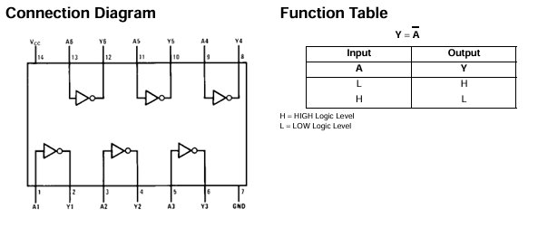
🔍 Ampliar
74LS04Pinout DIP-14 y tabla de verdad
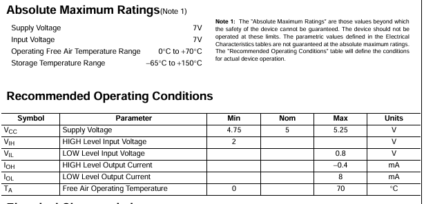
🔍 Ampliar
74LS04Condiciones de operación
74LS00
U31DIP-14 · TTL LSRAM Base
Cuádruple compuerta NAND de 2 entradas: La compuerta U31A (pines 1, 2 → 3) genera el pulso de escritura síncrono en modo RUN mediante ~WE_RUN = NOT(RI · PULSO_CLK), combinando la señal de control RI con el pulso angosto de ~10.5 µs producido por el diferenciador RC funcional (C7 = 10 nF, R58 = 1 kΩ) en cada flanco ascendente de CLK. Las tres compuertas sobrantes tienen sus entradas atadas a GND.
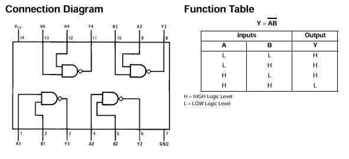
🔍 Ampliar
74LS00Pinout DIP-14 y tabla de verdad
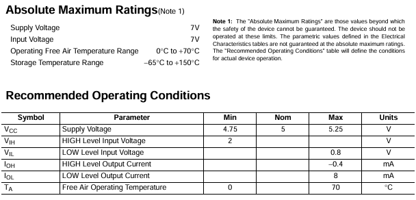
🔍 Ampliar
74LS00Condiciones de operación
74LS245
U30DIP-20 · TTL LSRAM Base
Transceptor octal bidireccional con salidas tri-estado: Configurado con DIR = VCC (dirección fija A → B) y habilitación ~G / ~OE (pin 19) gobernada por ~RO. Cuando ~RO = 0, vuelca los 8 bits leídos de la RAM hacia el Bus W (J3.5–J3.12, alineado 1 a 1 sin cruces). Cuando ~RO = 1 (escritura o modo PROG), sus salidas B0..B7 pasan a alta impedancia (Hi-Z), impidiendo cualquier contienda en el Bus W.
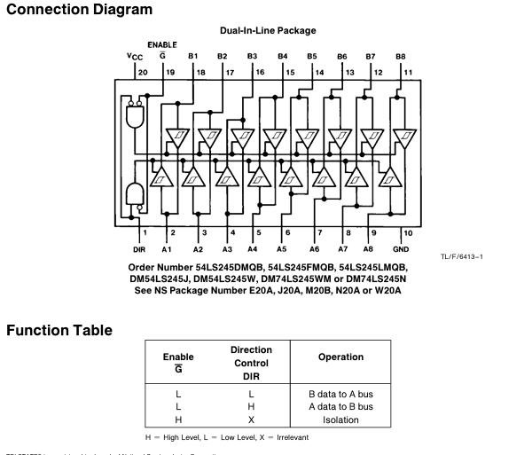
🔍 Ampliar
74LS245Pinout DIP-20 y tabla de función
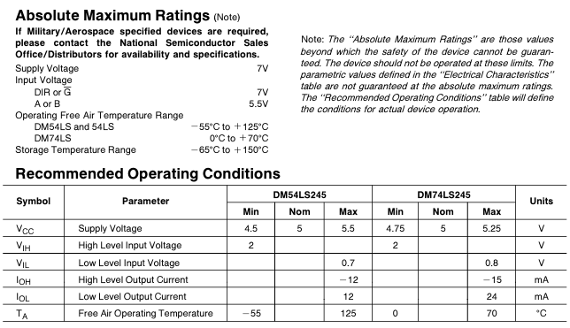
🔍 Ampliar
74LS245Condiciones de operación
3. Alternativas de Memoria RAM (Sección 4 del Informe)
Adaptaciones Venezuela · 4 memorias
Memoria
Organización / Encaps.
Bus / Salida
Control (Pin)
Modificación clave sobre ram.sch
7489 / 74LS89
16×4 (×2) / DIP-16
Separado / Inv. Colector Abierto
~CS(2)=0, ~WE(3)
Pin-a-pin; conserva 2×74LS04; agregar 8 pull-ups (1–4.7 kΩ a +5 V) en ~O1..~O4
HM6116
2K×8 (×1) / DIP-24
Bidireccional / Directa Tri-estado
~CS(18)=0, ~OE(20), ~WE(21)
A4–A10 a GND; quitar 2×74LS04; agregar 74LS244 (~OE=~WE) y ~OE_RAM=NOT(~WE)
HM6264
8K×8 (×1) / DIP-28
Bidireccional / Directa Tri-estado
~CS1(20)=0, CS2(26)=1, ~OE(22), ~WE(27)
A4–A12 a GND + CS2(26) a VCC + igual adaptación con 74LS244
HM62256
32K×8 (×1) / DIP-28
Bidireccional / Directa Tri-estado
~CS(20)=0, ~OE(22), ~WE(27)
A4–A14 a GND + igual adaptación con 74LS244 (permite paginar hasta 16 programas)
7489 / 74LS89
Reemplazo directo U24, U25DIP-16 · SRAM 16×4Alternativa Principal
Alternativa principal pin a pin al 74LS189: Comparte exactamente el mismo encapsulado DIP-16, pinout intercalado y salidas invertidas ~O1..~O4, por lo que entra en los mismos zócalos de U24/U25 y conserva intactos los inversores U28/U29 (74LS04).
⚠️ Requisito eléctrico obligatorio (salidas de colector abierto): A diferencia del 74LS189 (tri-estado), el 7489 / 74LS89 tiene salidas de colector abierto (open-collector). Es obligatorio añadir 8 resistencias pull-up externas de 1 kΩ a 4.7 kΩ hacia +5 V (p. ej. 1 red SIP-9 RN3 de 8×2.2 kΩ o 8×4.7 kΩ, o 8 resistencias discretas RP1–RP8) en las líneas ~DO7..~DO0 (pines 5, 7, 9, 11 de U24/U25) antes de entrar a U28/U29. Durante escritura (~CS=0, ~WE=0) las salidas reflejan el complemento del dato escrito (write-through invertido), sin riesgo de contienda en el Bus W porque U30 (74LS245) permanece en Hi-Z con ~RO = 1.
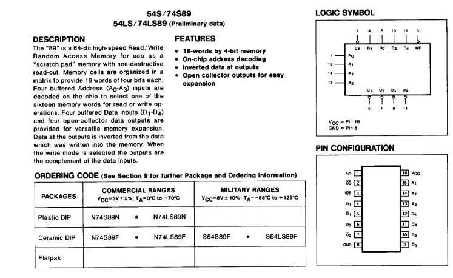
🔍 Ampliar
7489 / 74LS89Pinout DIP-16, símbolo y características
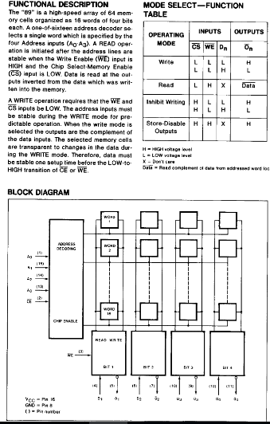
🔍 Ampliar
7489 / 74LS89Tabla de función y diagrama de bloques
SRAM estática CMOS 2048 × 8 bits con salidas directas (no invertidas): Reemplaza simultáneamente las dos 74LS189 y los dos 74LS04. Conectar A0–A3 (pines 8, 7, 6, 5) al MAR, aterrizar obligatoriamente A4–A10 (pines 4, 3, 2, 1, 23, 22, 19) y ~CS (pin 18) a GND, y gobernar ~OE (pin 20) como NOT(~WE).
Adaptación del bus bidireccional I/O0–I/O7: Insertar un buffer octal tri-estado 74LS244 entre U26/U27 (74LS157) y I/O0–I/O7 con habilitación ~OE_buf = ~WE para evitar contienda durante la lectura.
SRAM estática CMOS 8192 × 8 bits: Utiliza el mismo esquema de buffer tri-estado 74LS244 que la HM6116, con A0–A3 en pines 10, 9, 8, 7, ~CS1 (pin 20) y A4–A12 (pines 6, 5, 4, 3, 25, 24, 21, 23, 2) aterrizados a GND, ~OE en pin 22 (NOT(~WE)) y ~WE en pin 27.
⚠️ Atención crítica — Pin 26 (CS2): A diferencia de la HM62256, la HM6264 posee un segundo selector CS2 activo en ALTO (pin 26) que debe conectarse obligatoriamente a +5 V (VCC) para habilitar el chip.
SRAM estática CMOS 32768 × 8 bits: Conectar A0–A3 en pines 10, 9, 8, 7, aterrizar a GND las 11 direcciones superiores A4–A14 (pines 6, 5, 4, 3, 25, 24, 21, 23, 2, 26, 1) y ~CS (pin 20), con ~OE(22) = NOT(~WE), ~WE(27) y el mismo buffer tri-estado 74LS244. Cableando A4–A7 a un DIP switch extra se pueden paginar hasta 16 programas independientes de 16 bytes.
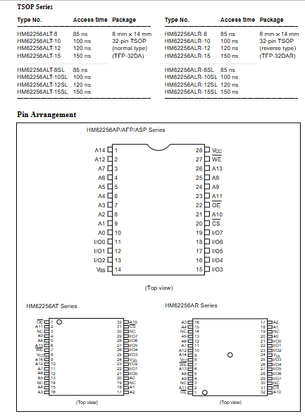
🔍 Ampliar
HM62256Pinout DIP-28 y encapsulados
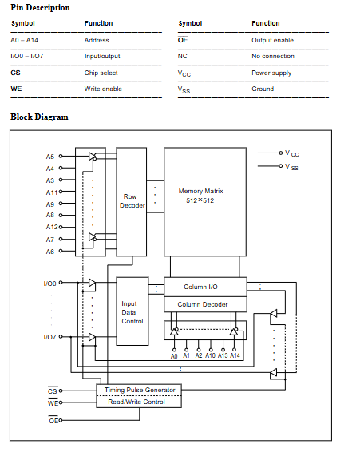
🔍 Ampliar
HM62256Descripción de pines y bloques
Datasheet
100%
Rueda del ratón o botones +/− para hacer zoom · Arrastra para recorrer los pines · ←/→ cambiar lámina · Esc cerrar